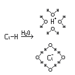

neutralização ácido base
Quando voce reage uma base (como $NaOH$) com um ácido (como $HCl$), ocorre uma reação química chamada "reação de neutralização", exemplos:
$ HCl + NaOH \xrightarrow{\text{ H₂O }} NaCl\,+\,H₂O\\ H₂S + 2NaOH \xrightarrow{\text{ H₂O }} Na₂S\,+\,2H₂O 3H₂SO₄ + 2Fe(OH)₃\xrightarrow{\text{ H₂O }} Fe₂S₃\,+\,6H₂O $
não se assuste até o final você provavelmente vai conseguir entender!

na imagem acima mostra o processo de ionização do $HCl$ na água.
A partir de agora tenha em mente que as reações de neutralização só acontecem em meio aquoso porque somente lá as moléculas são iônizadas, então agora as moléculas de água ficaram implícitas.
 $↑HCl + NaOH \xrightarrow{\text{ H₂O }} NaCl\,+\,H₂O$
$↑HCl + NaOH \xrightarrow{\text{ H₂O }} NaCl\,+\,H₂O$